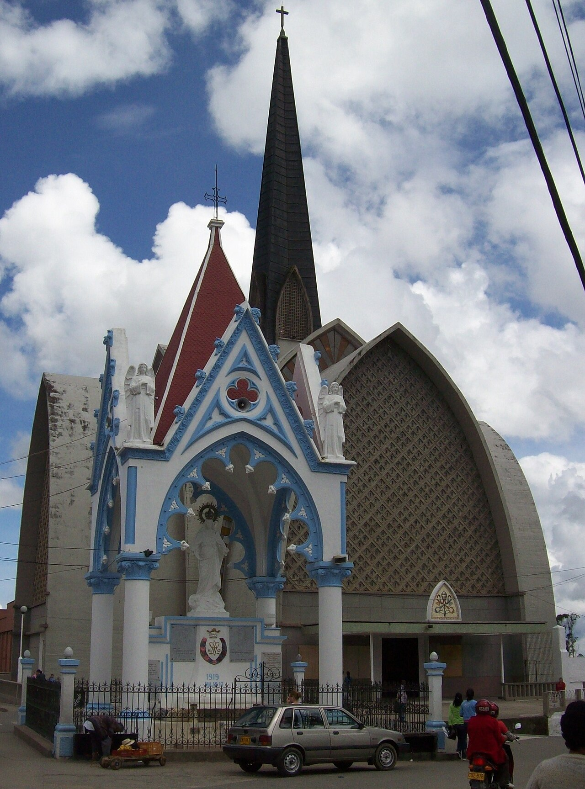
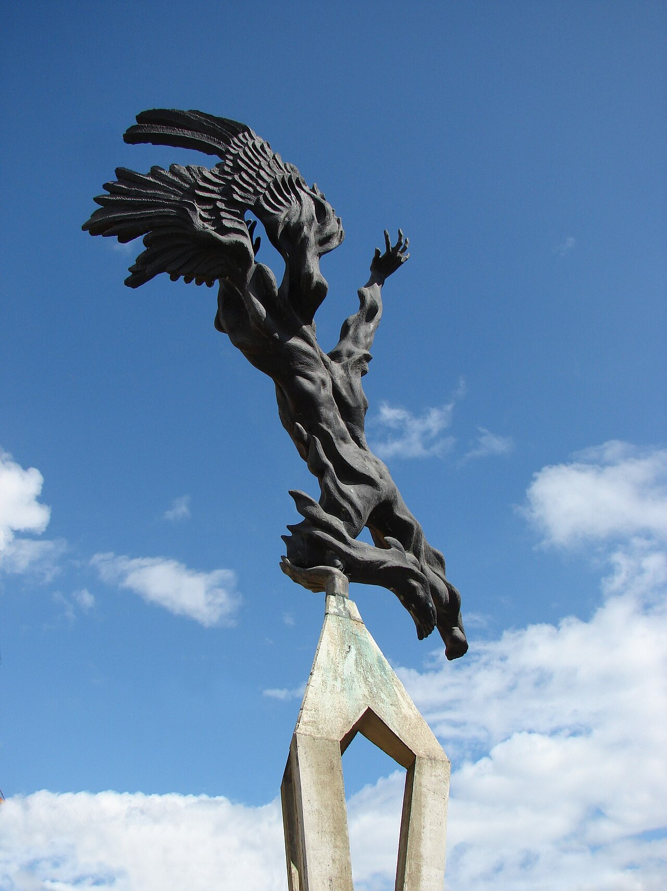

01
01Parque principal
Conoce los monumentos y la vida del centro.
Ubicar en el mapa ↗Norte · Antioquia, Colombia
Tradición religiosa, poesía y vida de altiplano.
Qué conocer ↗Conocer su historia ↓¿Tienes un negocio en Santa Rosa de Osos? Déjanos tus datos para participar ↗
Conoce el destino
La minería forma parte del origen de Santa Rosa de Osos. Su memoria también está vinculada al poeta Porfirio Barba Jacob y a un patrimonio religioso que se encuentra en templos y espacios del centro.

Ideas para tu visita
Elige los lugares que despiertan tu curiosidad y organiza tu recorrido a tu ritmo.
01Conoce los monumentos y la vida del centro.
Ubicar en el mapa ↗Acércate al patrimonio religioso del municipio.
Ubicar en el mapa ↗
03Una obra de Rodrigo Arenas Betancur dedicada al poeta.
Ubicar en el mapa ↗Imágenes redimensionadas; el encuadre puede variar según la pantalla. Las fotografías con licencia CC BY-SA conservan esa licencia.
Conecta las partes de tu viaje
Encuentra cómo moverte, dónde quedarte y comer, qué hacer y los servicios que necesitas. Explora a tu ritmo.
Ubicar Santa Rosa de Osos en el mapa ↗
Aún no hay lugares publicados en este directorio.
Ubica los lugares que quieres conocer y consulta con cada sitio sus horarios, condiciones de ingreso y accesibilidad antes de organizar tu recorrido.
Ubicar Santa Rosa de Osos en el mapa ↗No hay próximos eventos publicados.
¿Organizas un evento? Hablemos ↗Haz parte de Explorando Lugares
No te quedes por fuera.
Si tienes un hotel, restaurante, bar o tienda, ofreces transporte u organizas recorridos y actividades, queremos conocer tu negocio.
Déjanos tus datos. Te contactaremos para conversar sobre cómo incluir tu negocio en el portal.
Quiero participar ↗